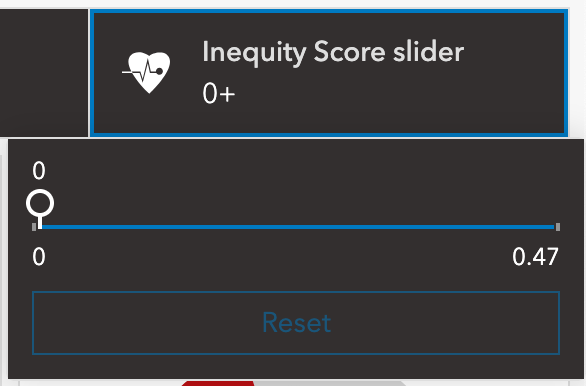
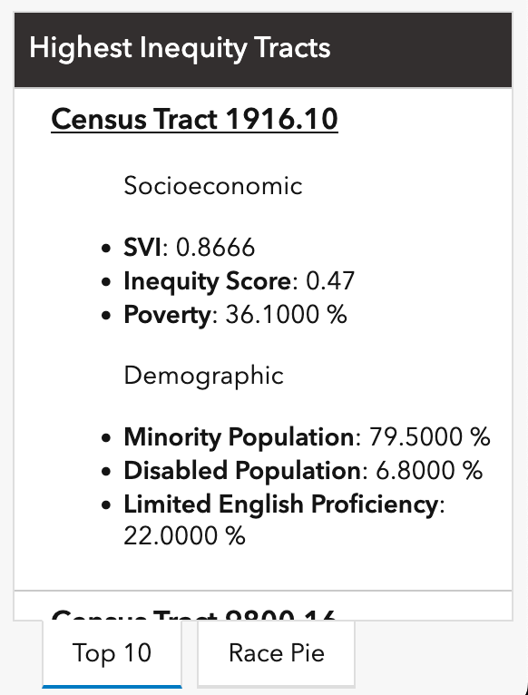
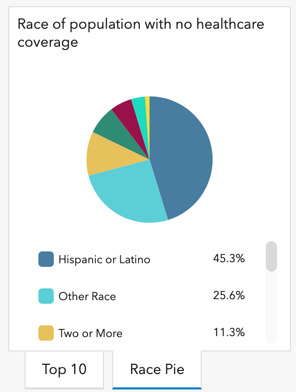
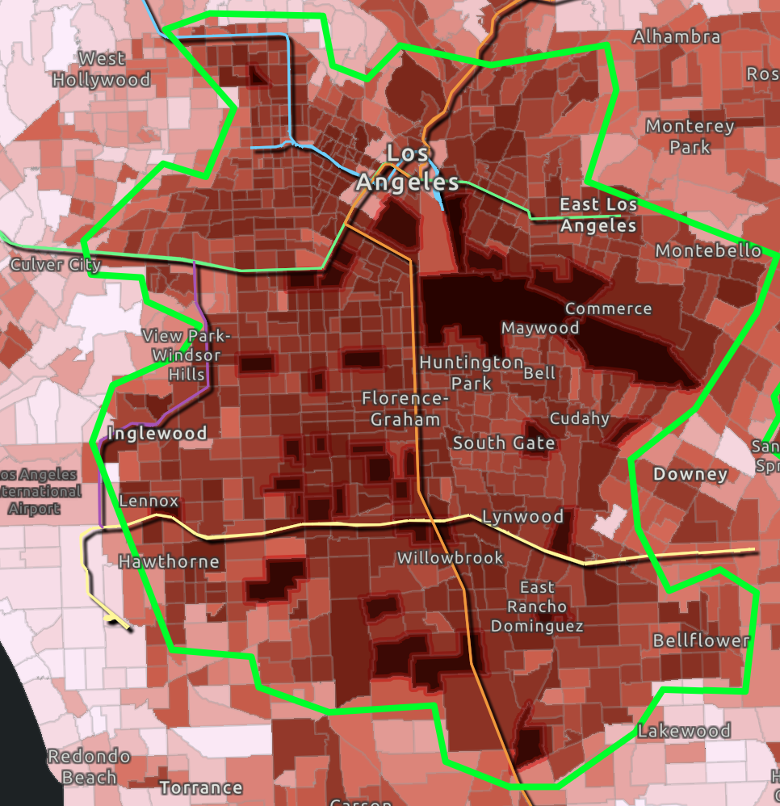
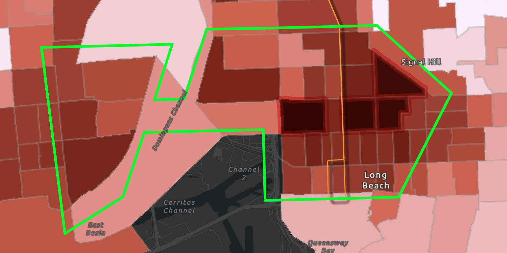
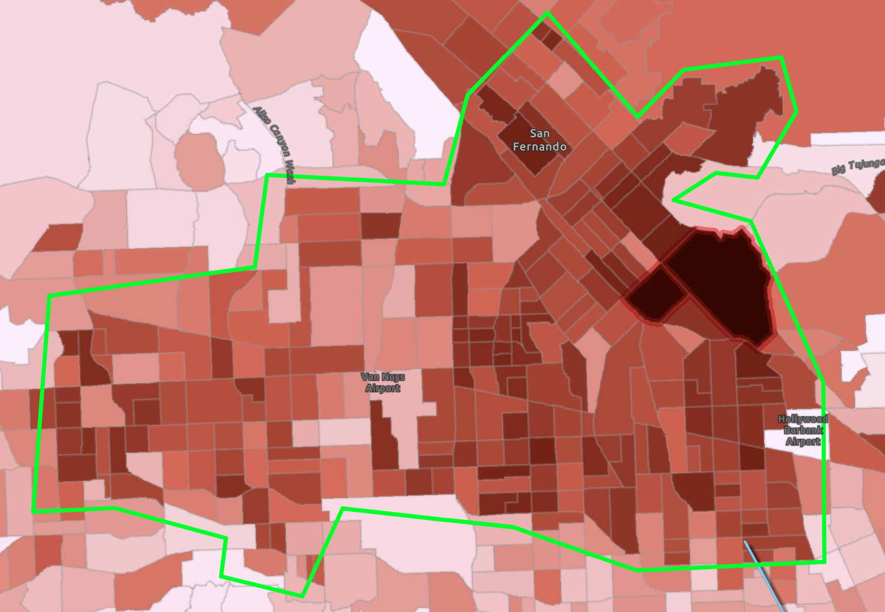
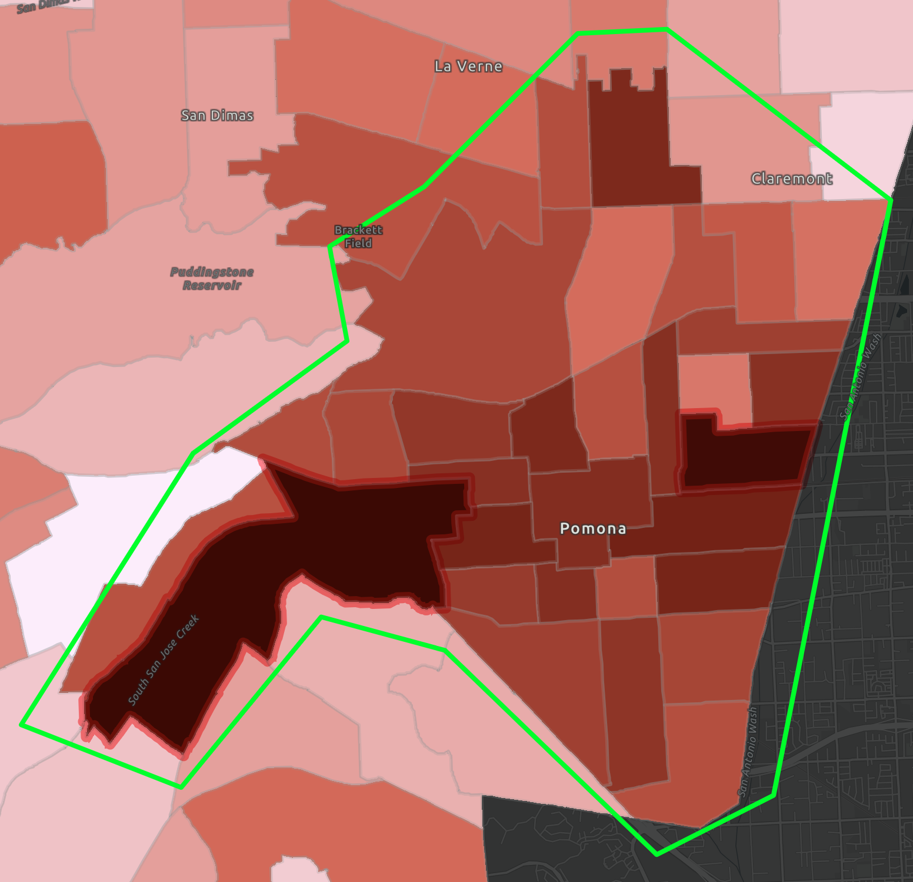
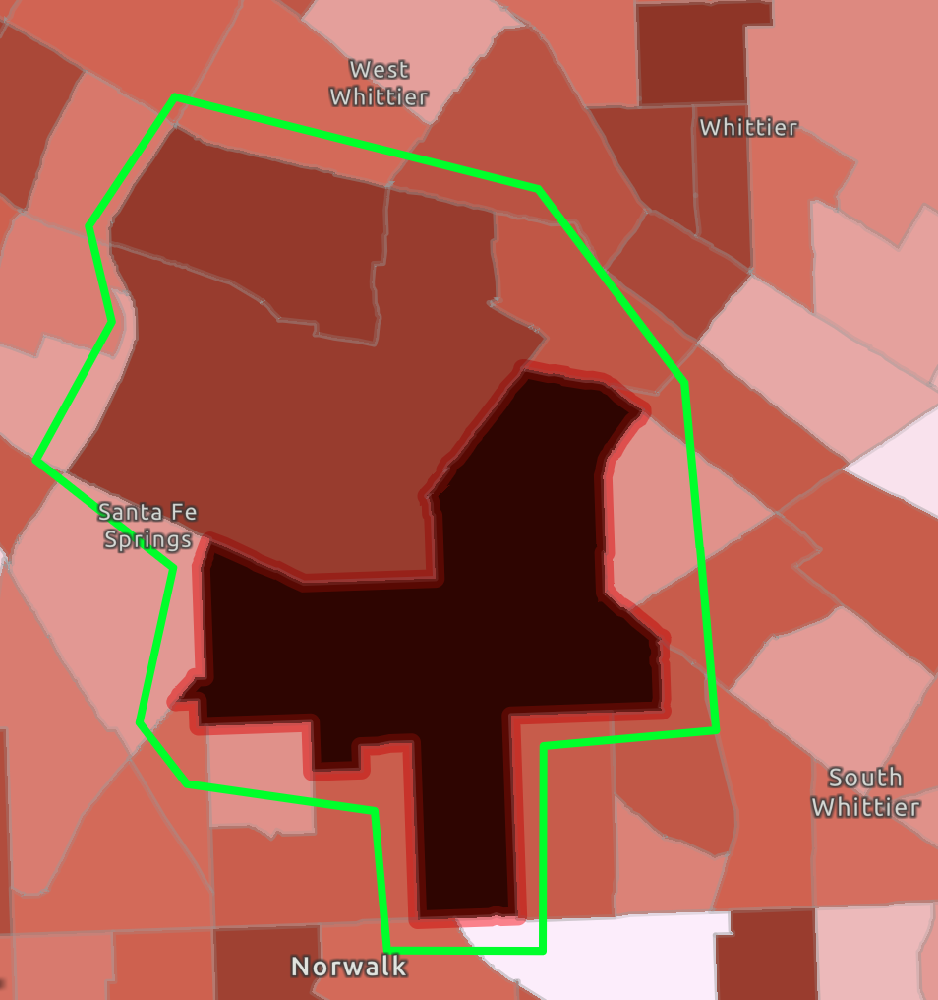
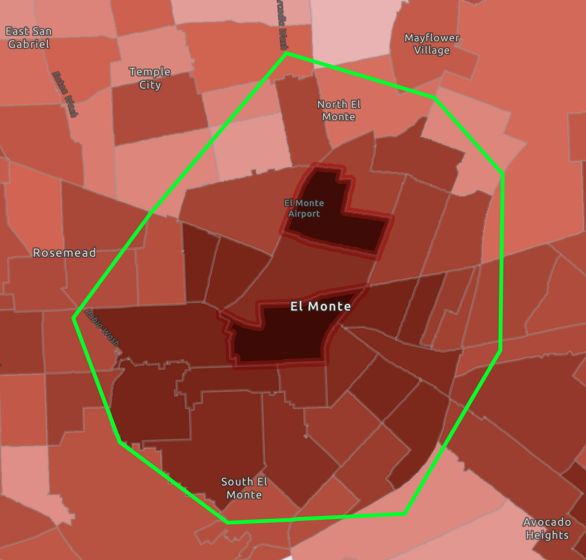
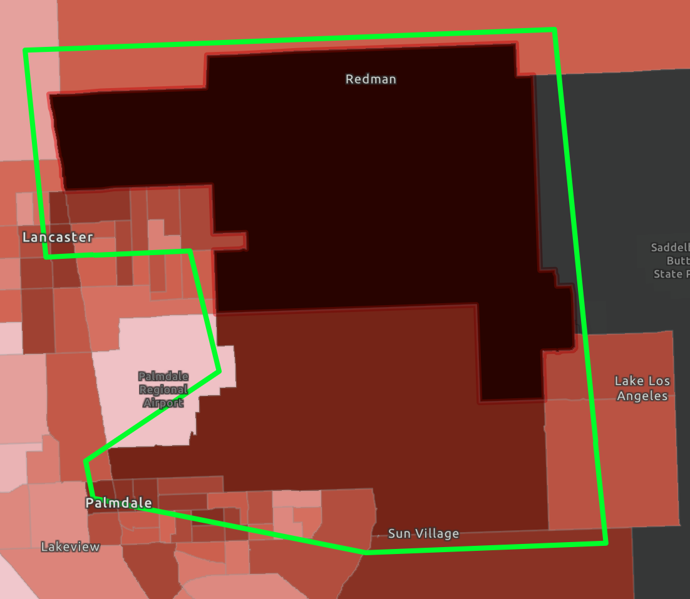

Health and Social Inequities Mapping in Los Angeles County
Click here for dashboard only
Not all communities receive resources equally.
Across the U.S., inequitable distribution of public resources leads to
gaps in healthcare access for underserved neighborhoods.
This project leverages ArcGIS, Python, and U.S. Census data to analyze
socioeconomic and demographic factors, calculate an Inequity Score,
and visualize which communities are most at risk of being underserved.
Problem Statement
Access to healthcare is uneven across Los Angeles County. Adjacent neighborhoods face overlapping social, economic, and medical barriers that lead to worse health outcomes. Public agencies need a clear, data-driven method to identify underserved communities and guide equitable resource distribution.
Methods
- Data Integration
- Performed spatial joins from TIGER tracts on SVI, Health Professional Shortage (HPS), and Medically Underserved Areas (MUA) data to create a unified layer of LA County census tracts.
- This composite layer contains information on socioeconomic status, household characteristics (e.g. English proficiency, disabilities), racial and ethnic status, housing type and transportation (e.g. no vehicle, mobile home).
- Calculated Fields
- From the composite inequity layer, multiple calculated fields were created including statistics on HPS score, MUA score, and overall SVI theme scores. These statistics were then used in the following formula to create a composite ‘Inequity Score’ which was calculated using an Arcade script.
- This produced an Inequity score with a range from 0.0 – 0.5 that describes inequity within a single tract based on the gathered data from HPS, MUA, and SVI where higher scores relate to worse conditions.
Dashboard Features
- Left-side
- Interactive Map: pan, zoom, and click onto tracts to see pop-up information. Different layers show different pop-up information when clicked.
- Drop-down menu: navigate through the main inequity regions through the bookmark icon, or toggle the visibility of the main 3 layers from the stack icon.
- Main 3 layers:
- LA Tracts - Healthcare Inequity: combines social vulnerability, primary care shortages, and medical underservice to identify LA County census tracts with the highest barriers to health access.
- ACS Racial Demographics: census tract-level population data from American Community Survey providing racial and ethnic composition, from ArcGIS Living Atlas
- ACS Health Insurance Coverage by Race: census tract-level health insurance coverage estimates by age group and race/ethnicity, from ArcGIS Living Atlas
- Right-side
- Inequity Score slider: filter the visibility of tracts on the (red-colored) inequity layer that are below the specified slider value.

- Legend: describes what the currently visible main layer is showing
- Highest Inequity Tracts: a list of the top 10 highest inequity tracts with additional information. Click to navigate to selected tract.

- Race pie: shows the race distribution of L.A.'s population with no healthcare coverage

Key Findings
My recommendation is to launch a “Show & Snack” pilot targeted at 15–19 year-olds by partnering with neighborhood eateries to promote appointment attendance.
In conjunction, full integration of SMS messaging for all appointments to remind patients of their appointments.
Finally, partnering with community organizations in the top No-showing Neighborhoods to provide transportation support.
- Inglewood to Bellflower, Compton to East Hollywood

- Wilmington to Downtown Long Beach

- San Fernando Valley, Sun Valley, Van Nuys

- Pomona

- Santa Fe Springs

- El Monte

- Redman

Conclusion
Public health departments, urban planners, and community nonprofits can use this dashboard to identify neighborhoods most in need of clinic expansion, mobile health services, or funding. This project demonstrates how integrating social vulnerability and healthcare access data can reveal structural health inequities in Los Angeles County.
Project Report
← Back to Portfolio